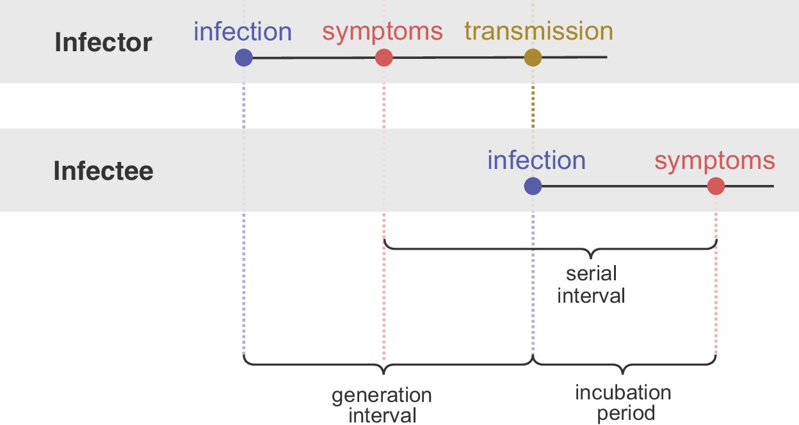

3 Estimating \(R_t\)
3.1 Methods
\(R_t\) can be defined in 2 ways: as the instantaneous reproduction number (see Section 3.1) or as the case reproduction number (see Section 3.2).
3.1.1 Instantaneous reproduction number \(R_t^i\)
Definition 3.1 The instantaneous reproduction number is the expected number of secondary infections occurring at time \(t\), divided by the number of infected individuals, each scaled by their relative infectiousness at time \(t\) (an individual’s relative infectiousness is based on the generation interval and time since infection) (Gostic et al., 2020).
3.1.1.1 Exact calculation
For a compartmental model (SIR or SEIR), \(R_t^i\) can be calculated exactly as (Gostic et al., 2020):
\[R_t^i = \beta(t) S(t) D\]
- \(\beta(t)\): the time-varying transmission rate.
- \(S(t)\): the fraction of the population that is susceptible.
- \(D\): the mean duration of infectiousness.
3.1.1.2 Cori method
\[R_t^i = \frac{I_t}{\sum_{s = 1}^{t} I_{t - s} w_s}\]
- \(I_t\): the number of infection on day \(t\).
- \(I_{t - s}\): the number of individuals who became infected \(s\) days in the past.
- \(w_s\): the infectivity profile, describes how infectious an individual is \(s\) days since infection, \(w_s\) dependent on time since infection \(s\) but independent of calendar time \(t\), and often be approximated by the generation interval (Cori et al., 2013).
- \(I_{t - s} w_s\): we scale the number of individuals who became infected \(s\) days in the past by how infectiousness are they still on day \(t\) (which is \(s\) days after the date they got infected, \(w_s\)).
Looking back at Definition 3.1, \(R_t^i\) is the expected number of secondary infections occurring at time \(t\) (\(I_t\)), divided by the number of infected individuals (\(\sum_{s = 1}^{t} I_{t - s}\)), each scaled by their relative infectiousness at time \(t\) (\(w_s\)).
The only parametric assumption required by this method is the form of the generation interval. The standard assumption is that \(w_s\) follows a discretized gamma distribution, but any parametric or empirical discrete distribution also work (Gostic et al., 2020).
3.1.1.3 When can we start estimating \(R_t^i\)?
Cori et al. suggest starting estimating \(R_t^i\) once those three criteria are fulfilled (Cori et al., 2013):
- At least after the sliding window size.
- At least after one mean serial interval.
- At least 12 cases (the initial case + 11) have been observed since the beginning of the epidemic (in a time window): to get a posterior credible interval of 0.3, the time window must comprise at least 11 incident cases.
3.1.1.4 Key considerations
Source: Dr. Anne Cori’s webinar.
- Temporal resolution: we can’t apply the \(R_t^i\) method when the time step of observation is too large (> mean generation interval).
- Spatial resolution: ideally use a spatial scale that you can distinguish locally infected cases from imported cases.
- \(R_t^i\) is very sensitive to the size of the sliding window: small windows can lead to highly variable estimates with wide credible intervals, whereas longer windows lead to smoothed estimates with narrower credible intervals. Perhaps also consider at least 11 incident cases in a sliding window to get a posterior credible interval of 0.3 (Cori et al., 2013).
3.1.2 Case reproduction number \(R_t^c\)
Definition 3.2 The case or cohort reproduction number is the expected number of secondary infections that an individual who becomes infected at time \(t\) will eventually cause as they progress through their infection (Gostic et al., 2020).
3.1.2.1 Exact calculation
\[R_t^c = \int_{u = t}^{\infty} R_u^i w_{u-t} du\]
- \(R_u^i\): the instantaneous reproduction number of current infected cases at time \(u\), starting from \(t\) to the end of their infectious period \(\infty\).
- \(w_{u-t}\): the infectiousness of them at that time.
3.1.2.2 Wallinga and Teunis method
There are 3 steps (Gostic et al., 2020):
Step 1. Estimate the likelihood that case \(j\) (infected at time \(t_j\)) infected case \(i\) (at time \(t_i\)).
\[p_{ij} = \frac{w_{t_i - t_j}}{\sum_{i \neq k} w_{t_i - t_k}}\]
- \(\sum_{i \neq k} w_{t_i - t_k}\): sum of the infectiousness of all cases (other than \(i\)) infects case \(i\).
Step 2. Compute the individual reproduction number of case \(j\).
\[R_j = \sum_i p_{ij}\]
Step 3. Compute the case reproduction number at time \(t\), it is the expected value of \(R_j\) for all individuals infected at time \(t\).
\[R_t^c = \mathbb{E}(R_j)\]
3.2 Proofs
The renewal equation is a cornerstone of demographic theory and backbone of the \(R_t\) estimators.
\[b(t) = \int_{a = 0}^{\infty} b(t - a) n(a) da\]
- \(b(t)\): the number of births at time \(t\).
- \(b(t - a)\): the number of birth at time \(t - a\), or the number of people of age \(a\) at time \(t\).
- \(n(a)\): the birth ability of people of age \(a\), scaled by the probability of surviving to age \(a\).
To describe epidemic dynamics, the renewal equation is expressed in terms of \(I(t)\).
\[I(t) = R_0 S(t) \int_{s = 0}^{\infty} I(t - s) w_s ds\]
- \(R_0 S(t) = R_t\): see Definition 3.
- \(I(t - s)\): the number of individuals who became infected \(s\) time points ago in the past.
- \(w_s\): the infectivity profile, or the probability of how infectiousness are they still at time \(t\) (which is \(s\) time points after the date they got infected).
- \(I(t - s) w_s\): we scale the number of individuals who in the past by how infectiousness are they still at time \(t\).
Now we transform the equation a bit, and we got something very similar to the Cori method (see Section 3.1.1.2).
\[R_t = \frac{I(t)}{\int_{s = 0}^{\infty} I(t - s) w_s ds}\]
3.3 Compare \(R_t^i\) and \(R_t^c\)
There are several important differences (Gostic et al., 2020):
- Instantaneous \(R_t^i\) is real-time estimation and only use data from before time \(t\), while case \(R_t^c\) is inherently forward-looking.
Instantaneous \(R_t^i\) overestimates \(R_t\) early in the time series, because any infections that occurred before the first observed date are missing terms in the denominator (the \(I_{t - s}\) in Section 3.1.1.2, data is left-truncated at the beginning).
Case \(R_t^c\) underestimates \(R_t\) at the end of the time series, because it relies on time points not yet observed which become missing terms in the integral (the \(R_u^i\) in Section 3.1.2.1, data is right-truncated at the end).
- Case \(R_t^c\) is shifted forward in time relative to instantaneous \(R_t^i\), produces leading estimates of \(R_t\) because it uses data from time points after \(t\), whereas the \(R_t^i\) uses data from time points before \(t\).
Overall, for real-time analyses aiming to infer the impact of changes in policy, behavior, or other extrinsic factors on transmission, the instantaneous reproductive number will provide more temporally accurate estimates and is most appropriate.
3.4 Potential biases
\(R_t\) is a value in specific time, therefore there are 2 potential forms of bias in \(R_t\) estimates (Gostic et al., 2020):
Accuracy (the value): Systematic over- or underestimation caused by misspecification of the generation interval. Mostly impact when \(R_t\) is substantially > 1 (e.g., the beginning of COVID-19 when \(R_t\) is relatively high) or < 1 (e.g., after a very effective intervention then \(R_t\) might be low).
Timeliness (the time): Temporal inaccuracy that \(R_t\) estimates may be leading or lagging the true date, has several possible causes and can be difficult to avoid.

Figure from Sender et al. (Sender et al., 2022).
3.4.1 Generation interval
Definition 3.3 Generation interval is the time from the infection of a primary case to infection of the cases he/she generates (Cori et al., 2013).
If we match this to an SEIR model, the generation interval starts when the infector enters the E compartment (meaning they got infected). The latest time they can infect an infectee is at the end of their residence in the I compartment (they are infectious). Therefore, generation interval is the sum of residence times in compartments E and I (Gostic et al., 2020).
The mean generation interval decreases when susceptible persons are at risk of infectious contact from multiple sources. Because when a susceptible person has multiple potential infectors, there is a “race” to infect him/her in which only the first infectious contact leads to infection (Kenah et al., 2008).
Biases from misspecification of the generation interval mean (A) or variance (B) (Gostic et al., 2020).
- If mean generation interval is set too high, \(R_t\) will be more extreme (too high when true \(R_t > 1\) and too low when true \(R_t < 1\)).
- If mean generation interval is set too low, \(R_t\) will be closer to 1 than the true value.
- The effect of the mean generation interval is large when true \(R_t\) further from 1. Therefore, this bias may be greatest at the early epidemic, when true \(R_t\) is high, together with highly uncertain generation interval and limited data.
Tools like EpiEstim and EpiNow2 allow users to specify the prior variance of the mean and standard deviation. However, bear in mind that uncertainty around an incorrect generation interval only widen the 95% credible interval, but will not shift the estimates toward the truth and will not correct this bias.
3.4.2 Serial interval
Definition 3.4 Serial interval is the time between symptom onset in an infector–infectee pair (Gostic et al., 2020).
Serial interval is more easily observed than generation interval and often used in its place. Although the serial and generation intervals are often conflated, there are important differences (Gostic et al., 2020):
- Serial interval and generation interval usually have the same mean, but different variances.
- Serial interval can be negative (when the symptom onset of infector is later than infectee, such as in COVID-19), generation interval is always positive.
The distributions of the serial interval and the generation interval are identical in these scenarios (Cori et al., 2013):
- For diseases such as influenza, SARS, measles, and smallpox, it is expected that infectiousness starts only around the time of symptom onset.
- When the infectiousness profile after symptoms is independent of the incubation period.
3.4.3 Delays

Adjusting for delays (Gostic et al., 2020).
If \(d\) is the delay from infection to observation, then observations at time \(t\) inform \(R_{t − d}\), not \(R_t\).
If the distribution of delays can be estimated, then \(R_t\) can be estimated in 2 steps:
- Infer the underlying time series of infections.
- Input the adjusted time series into an \(R_t\) estimation method.